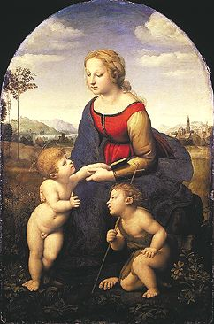

Raffaello Santi, llamado Raphael
1483-1520
La Virgen y el Niño con el pequeño san Juan Bautista, llamada la Bella Jardinera
1507
Tabla cimbrada
A 1,22 m; L 80 cm
INV 602
Esta Virgen con el Niño, que debe su nombre al entorno campestre que les rodea, es una de las Madonas más célebres del período florentino de Rafael (1504-1508). Estancia crucial en la que el joven artista de Urbino deja atrás la manera de Perugino a favor de un clasicismo influido por el estudio de Leonardo, Miguel Angel y Fra Bartolomeo. La obra, por su ligero "sfumato" y su esquema piramidal, refleja particularmente, la influencia de Leonardo, quien no deja Florencia hasta 1506. El dibujo se mantiene sin embargo preponderante en el cuadro, que desarrolla una serenidad muy distinta a la inquietante complejidad de las obras de Leonardo.
ATRAS